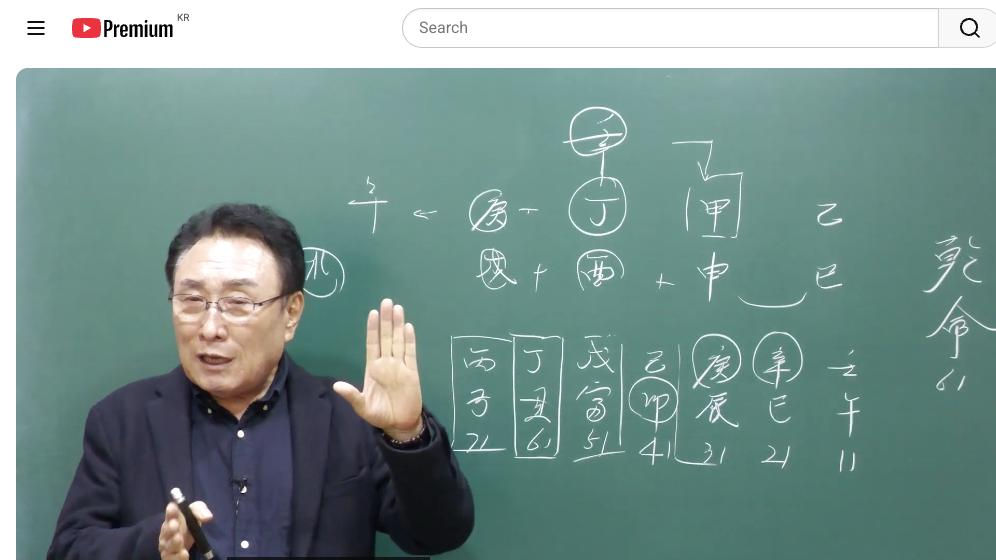

남촌물상TV 전체 문서 › 동영상 V0123
사주에 재물이 많은데 재벌이 될 수가 있을까 ?

| 문서 번호 | V0123 (동영상) |
|---|---|
| 영상 URL | https://www.youtube.com/watch?v=sVTFNlaPGtM |
| 영상 ID | sVTFNlaPGtM |
| 게시일 | 2025-04-14 |
| 길이 | 18:36 (1116초) |
| 조회수 | 875회 (수집 시점 기준) |
| 카테고리 | Howto & Style |
| 자막 | ko (자동생성) |
| 수집 시각 | 2026-08-30 17:03 (KST) |
영상 설명 (YouTube 설명 원문 그대로)
사주에 재물이 많아도 재물을 취하지 못하면 조직 생활이 좋다.
재벌 사주는 대운이 좋아야 한다. 기회는 나를 기다리지 않는다.
올때 잡아라!
전체 자막 (429구간 · 타임스탬프 클릭 시 해당 장면으로 이동)
[0:02][음악]
[0:04]이 남자 사주인데에 을사 을사 갑신
[0:08]정유 경술이다. 이제 사주 이렇게 돼
[0:11]있는데 어 이런 사람들이 보면 제복이
[0:14]좋게 보이잖아요. 그게이 어 흔히
[0:18]이제에 고조을 보는 사람들은 보시면
[0:21]이거 재물이 좋다 이렇게 얘기할 수
[0:22]있어요. 근데 재물이 좋은데이 채물을
[0:25]진짜 취할 수 없냐가 문제죠. 그럼
[0:28]우리는 여기에 정하일주는 정화일주는이
[0:32]경금의 재를 죄를 녹일 수가 없다.
[0:37]이게 특징이에요. 그러면 어울 때이
[0:40]재를 채 신금이 돼 있을 때이 경금이
[0:44]신금이 돼 있을 때 정화의 재물을
[0:47]취할 수가 있는데 그러면 을경가
[0:49]합의이 돼 있을 때는이 재물을 취할
[0:51]수 있겠죠. 자, 재물을 취한다는
[0:53]얘기는 신금이 되면 신수까지 다 취할
[0:56]수 있는 거예요. 근데 경금이 될
[0:58]때는 신수이 되면 결과적으로 재물을
[1:02]취할 수 없다. 이렇게 보시는게
[1:03]정확합니다. 그래서 재운이 좋다고
[1:06]해서이 사람이 다 재운을 가지고 시할
[1:08]수 있는 염자를 구별해 볼 수 있는
[1:10]것이고 사주를 잘못 보면이 오판할
[1:12]수가 있기 때문에 여러분들은이 사람이
[1:15]재운이 좋아도 쉽게이
[1:17]재물이 경금이 젠데 지지의 술토와
[1:22]신유수의 금국으로 돼 있죠. 이게
[1:25]신금이 돼 있으면 다 취할 수 있는
[1:26]거예요. 뿌리가 우게 뿌리에서
[1:30]연결되기 때문에 신금이 뿌리로 연결될
[1:32]때는 친수를 다 취할 수 있는 것이고
[1:35]경금이 됐을 때는 취할 수 없다.
[1:37]이것이 저희들이 특이한 방법의
[1:39]해법이기 때문에 재운이 온다고 채물을
[1:42]제하출 수 없는 것이다. 이렇게
[1:43]결론을 지울 수 있다. 그러면 이런
[1:45]사람은 뭐 하냐? 재물에 탐서
[1:48]사업성을 버리고 자기 사업성을 버리고
[1:52]조직 세는게 좋다. 이렇게 결론을
[1:54]내릴 수가
[1:55]있습니다. 자, 그러면 여기에서이
[1:57]사람의 단점이 여러 가지가 있죠.
[1:59]사주 보실 때 자, 뭐가 없는 것부터
[2:02]택을 해 보자. 한 말이 뭐가
[2:03]없어요? 없어요. 자, 물이 없다.
[2:05]자, 물이 없다는 얘기는이
[2:08]금이 놀 수가 없다 얘기입니다.
[2:10]그죠?
[2:11]을 수가 없어요. 그러면 자, 물을
[2:14]끌어다 쓰는 것은 오직 내가
[2:16]끌어야죠. 그러면 자,
[2:18]여기에서 저 어디를 끌고 가요?
[2:20]정화에서 뭘 끌고 와? 임수를 끌고
[2:22]온다 그 말이에요. 그러면 물을 끌고
[2:25]왔을
[2:26]때 본래는이 금이 놀기 위하고 저
[2:30]나무를 키운데 물을 쓰려고 끌어온
[2:32]거예요. 그럼 끌어온 목적이 뭐냐를
[2:35]생각을 여러분들이 해 보셔야 돼.
[2:37]그냥 단순하게 과거에 기초에 배웠던
[2:39]정림 한목 을목이 이렇게만 생각하지
[2:41]마시고
[2:42]임수의 물을 끌어오면은 여기서 쓸게
[2:46]뭔가 금이 물에서 놀 수 있고 나무를
[2:49]길 수 있었다 한다 이거예요. 그래서
[2:51]두 가지를 할 수 있다고 생각을 할
[2:53]수 있다. 이렇게 쉽게 이해하시면
[2:55]됩니다. 자, 그러면 이제 그런다고
[2:59]정립 합이 을목이 안 된게 아니라
[3:01]됩니다. 되는데 자, 보세요. 자기가
[3:05]증임 한목 을목이 되면은 어디하고
[3:08]관계가 있겠냐를 보시면 여기에 등락을
[3:11]할 수 있다는 얘기죠. 그렇죠. 등락
[3:14]계급할 수 있으면 여기 얹혀서 가도
[3:17]좋다 그 얘기 아닙니까? 그러면
[3:19]시계에서 을경 합이 풀어졌을 때는
[3:23]경금이이
[3:25]칼자루가 갑목이 칼자루가 될 수 있다
[3:27]그 말이에요. 그래서 나는 얹혀서
[3:29]가면이 재물도 결과 조직 생활서는
[3:33]취할 수 있다. 이렇게 보시면 돼요.
[3:35]그래서 간단하게이 사주를 해 요약해서
[3:38]풀어보자면 이런 결론을 찾을 수가
[3:41]있다 그 말입니다. 자, 그렇다고
[3:43]봤을
[3:44]때 지지에서 보면이 제국이 좋잖아요.
[3:48]그러니까 절대 이사장들이 사주를 고전
[3:50]한번 갖다 밀어 봐세요. 자, 우리는
[3:53]고전에서는 정화가 금을 녹일 수
[3:56]있다라고 배웠죠. 그렇죠? 고전에서는
[4:00]병화는 못도 정화가 녹일 수 있다고
[4:02]얘기를 배웠어요. 고전에서는. 근데
[4:04]우리 물상도는
[4:06]반대예요. 정화는 신금을 녹일 수가
[4:09]있고 경금을 녹을 수 없다라고
[4:11]이해하신다는 거. 그러니까 이런
[4:12]사주는 고전에 갔다 되면은 아이 사람
[4:16]재벌 사주야. 좋다고 할 겁니다.
[4:18]근데 우리 물상노릇 아니야. 실질
[4:21]검증해도이 사람은 아니었어요.
[4:24]그러니 제가 검증한 결과에서는 이렇게
[4:27]물상는 정확성과 또 실제 재운이
[4:30]어떻게 올 때 돈을 벌고 하는 것도
[4:32]정확하게 구별이 됩니다. 그건 저는
[4:34]검증하기 때문에 맞는 거예요. 근데
[4:37]일반적으로
[4:38]생각하면 정화에서는 경금을 녹길 수
[4:41]있다라고 배웠다 그 말이야.
[4:43]고전에서. 그러니까 아이고 최국이 다
[4:45]좋아. 아 이거 사람 큰 재벌가야.
[4:47]이렇게 할 수 있다. 그 말이야.
[4:48]재벌가가 아니야. 나는 아니라고 했고
[4:51]고전한 사람들은 재벌가라고 표현할
[4:53]수밖에 없다. 어느 쪽이 정확하느냐?
[4:56]물상론이 정확하다. 바로이
[4:59]얘기입니다. 그러면 이제 여기에서
[5:03]개념은
[5:05]사와이 친이 있다는 얘기는 인신사의
[5:09]개헌성을 가지고 있다는 얘기
[5:10]아닙니까? 그러면 괜히 활동적인 할
[5:12]수 있는 거예요. 자,
[5:15]그다음 월경 합을 했을 때는 했을
[5:18]때는 자, 여기 재를 취할 수가 있고
[5:21]그 말이에요. 그러 대신 내가 정립
[5:24]한목에이 여기에 등불이 될 수가 있고
[5:27]그러면 화불에서 등불을 쓸 거냐 결국
[5:31]그냥 등불을 쓸 거냐 정립을 해서
[5:32]을목을 쓸 때 이것을 구별할 줄도
[5:35]알아야 됩니다. 그게 좀 어렵죠.
[5:37]이렇게 생각하면. 그러니까
[5:40]쉽게 을경 합이 될 때는 죄를
[5:42]추구하는 것이 되는 것이고 그죠?
[5:45]을경합이 풀어졌을 때는 감목에 등불이
[5:48]되리라 이거예요, 답은.
[5:51]그래서 그러면이 등불이 된다는 얘기는
[5:54]내가 정립 한목을
[5:56]해서이 등락을 하는거나 쉽게 내가
[6:00]등불을 다 하는거나 내가 을목으로
[6:03]가서 등불을 달아 준다고 생각하시면
[6:04]되죠. 그렇죠?
[6:07]그러면
[6:08]을목과이 갑목과 경금의 관계는 어떤
[6:12]관계? 칼과 칼루 관계기 때문에
[6:15]건설하고 관련된 쪽에 연결이 있다라고
[6:18]보면 된다.이
[6:20]얘기고 자기가 실질적인 재를 취할 수
[6:23]있는 여건은 최후이 지금 가고 있죠.
[6:26]이때는 조직 생활로서 쉽게해서 금융
[6:30]계통에 일을 할 수 있다고 보시면
[6:32]된다 그 말입니다. 정확하게. 그러면
[6:35]대운 한번
[6:36]봅시다. 11살 때가
[6:39]이모대운이에요. 이모대운. 그럼
[6:41]본인이 정립 한 모이 묶어서
[6:43]올라간다는 얘기죠. 그러면 자 여기에
[6:46]오라는 건 뭐냐? 오라는 것은 장
[6:49]형태를 취하고 있는 거예요. 그렇죠?
[6:52]항시 개성이라는 것은 그 연도에 그릴
[6:55]수 있다라고 생각하시면 되지. 이제
[6:57]이렇게 보시면 쉽게 우리가 아하이
[7:00]사람이 성향이 어떻게 흘러갈고 흘러갈
[7:02]것이다. 그러면 자 모든 일은 자기가
[7:07]필요했던 재운이 이거 아니었죠.
[7:09]재운이 재운이 끝나면 달라지는
[7:12]거예요. 자, 사람이 사람이 볼 때
[7:15]운이란
[7:17]그래요.이 재운이 흘러간다는 것은
[7:20]재운의 금의 행위를 하다가
[7:23]여기서부터는 마음이 바뀌어 그말로
[7:25]같은
[7:26]얘기예요. 이게 이제 흐름이라고.
[7:28]이게 대운이에요. 그래서 대운과
[7:31]흐름을 정확하게 보면 딱 판단이
[7:35]정확해죠. 그죠? 그럼이 사람의
[7:38]살아나가는데 인생의 전성기는 어디?
[7:40]이렇게 찾아봐야지. 전성기는 어디냐?
[7:44]그러면 실질적으로 여러분들이 생각할
[7:45]때 저 신사 경지인의 돈을 벌었을
[7:49]거냐 못 벌었을 거냐 그 말이에요.
[7:51]재운이 왔는데. 그러면 고전식으로
[7:54]얘기하자면 돈 많이 벌었다고
[7:56]나와야지. 그렇죠?
[7:59]근데 제가 뭐라 그랬어요? 월경 합이
[8:02]돼 있으면은 내가 침금의 재물을 취할
[8:06]수 있고 그 말이고 풀어지면 경금이
[8:08]되죠. 자 신사 대운에
[8:12]신금이서을 풀요, 안 풀어요? 풀죠.
[8:16]또 여기 와서는 뭐예요? 경금이
[8:17]와서을 풀어 불죠. 실질적인 재운이
[8:21]올 때 내가 대가 재우를 못 본다.
[8:23]이거 말이죠.
[8:25]이해하셨죠? 네. 그러니까 여러분들이
[8:27]착각할 때 잘못한 것은 여기서 재온이
[8:30]와서 재운이 좋다고 해면 별로해.
[8:33]안 맞아요. 절대 안 맞습니다. 근데
[8:37]여건이 어떻게 구성이 조성되냐에
[8:40]따라서 재운이 되고 안 되고 한다 그
[8:45]말이에요. 그냥 정확하게 답을 얻을
[8:47]수 있는 거예요. 그러면 실질적으로이
[8:50]운에서는 조직 성관만 해야 돼. 그
[8:53]말이에요. 조시성에
[8:56]그러면
[8:59]자기가 그 회사를 그만 둘 때는 어느
[9:03]거냐? 맞아. 회사를 다닐 때 이것도
[9:05]한번 생각해 봐야죠. 자,이 사람이이
[9:08]사람이 자기가 재운의 행위를 했고 할
[9:11]때는 여기서는 뭐예요? 각기 합이
[9:14]됐죠. 그러면 내가이 등불 역할을
[9:17]해야 되는데 지지대가 없어졌잖아요.
[9:21]그죠? 목이 됐으니 지대 없어지죠.
[9:23]그러면 지지는 뭐예요? 자업이 형성이
[9:26]돼요, 안 돼요? 된다. 그때
[9:28]그만두게 돼야 돼. 회사를 그러니까
[9:30]자, 우리는 회사를 다닐 때 어느
[9:33]시점에 가서 네가 그만 둘 것이다.
[9:35]어느 시점 가면은 네가 성장하고
[9:38]새로운 뭘 할 거다는 것을 정확하게
[9:40]찾아낼 수가 있다 그 말이에요.
[9:43]그러니까 얼마나 정확합니까? 틀릴
[9:45]이유가 없어요.
[9:46]정확합니다. 그래서 이분이 저한테
[9:49]옛날 상담할 때 선생님처럼 얘기하는
[9:52]처음 봤다. 다른데 가면은 다 자
[9:56]재운이 좋아서 돈을 잘 번다고 나한테
[9:59]굉장히 하고 아이고 당신 재벌이냐고
[10:02]재버리냐고 이렇게 상담했는데 선생님은
[10:05]아니라고 딱 자른 것 전 자기는 참
[10:06]신기했습니다라고 얘기한 거예요. 사실
[10:09]선생님 제가 그랬습니다. 그 말이야.
[10:12]그래서 우리들이 생각할 때 사주를 잘
[10:16]보고 못 보고는 한 장 차이데
[10:18]물상론과 고전의 차이점을 여기서
[10:20]드러낼 수가 있는
[10:22]거예요. 그래서 정확성을기할 수
[10:25]물상이 얼마나 정확하다는 것을 찾아낼
[10:27]수가 있습니다. 음.
[10:30]그래서 이분은 이분 지금도 저한테
[10:31]연락고 옵니다. 지금도 연락고 와요.
[10:34]그래서 벌써 10년이 넘어서도 저한테
[10:36]와요. 그
[10:38]여러분들이이 그 생각을 해 보면은
[10:41]이제 이런 사람들이 한번 정확학살
[10:44]짚어 주면 쭉 고정 거래가 되는
[10:47]거예요. 그래서이 사람은 여기
[10:49]회사에서 이제 그만두게 되죠. 자
[10:53]그러면 무인 대원회는 어쩔 것인가?
[10:56]무인 대운에 자 얼름 생각하세요.
[10:59]그럼 자 무토가 온다는 얘기는 저
[11:02]갑목에 뿌리가 된다는 얘기죠. 그럼
[11:04]자 여기에서 갑목의 뿌리가 된다는
[11:07]얘기서 감옥에 나무가 심을 수 있는
[11:09]땅이 왔고 갑목의 뿌리가 왔다는
[11:12]얘기예요. 그러면 인식사야 됐죠.
[11:14]너는 새로운 변화를 잃 건데 그
[11:16]말이에요. 그러면 자 갑목이 살아
[11:19]있을 때는 어떠한 일이 벌어질
[11:21]것인가?
[11:23]자, 그러면 감목이 살아 있다는
[11:24]얘기는이 감목 입장에서는 경금하고
[11:27]관계가 있죠. 여기 입장에서는 감목
[11:30]입장에서는 한시 대법을 보라고
[11:32]했어요. 감목 입장에서는 관이 되고
[11:36]경금의 입장에서는 재가 돼. 아멘.
[11:38]그 재관이 서로가 융통이 되게 돼
[11:40]있는 모든 오행은 다 그렇게 돼
[11:42]있어요. 천간 합을 충을 제가 안 쓴
[11:45]이유가 좀 아주 설명 기회가 있지만은
[11:47]그래서 우리
[11:48]물상습니다. 자
[11:50]그러면 여기에이 사람은 이제이 나무가
[11:54]성장할 수 있는 기회가 왔다고
[11:56]생각하면은이 사람
[11:58]반드시이 건설 쪽에 관계된 일을 하고
[12:01]손이 맺어질 수가 있는
[12:02]거예요. 이쪽으로 가야 될 일이에요.
[12:06]그래서 우리는 어떤가 잘할 수 있는
[12:09]일인가를 지표를 정해서 우리는 그걸
[12:12]결정을 해서 그 사람한테 인도하는
[12:14]역할 하는 사람이 우리가 하는
[12:15]일이다. 굉장히 중요한 일을 하고
[12:18]있는 거예요.
[12:18]우리가 말 한마디 잘못되면이 사람
[12:22]엉뚱한 길로가 고생을 하게 되고
[12:24]그러니까 만약에이 사람한테 우리가
[12:26]생각할 때 고존처럼 당시 돈 잘
[12:28]보니까
[12:29]사업해. 사업에서 어쩌고어요? 쫄딱
[12:32]망하는 거지.
[12:34]그래서 우리가 잘못 한번인 잘못
[12:38]인식을 해 주게 되면 그 사람이
[12:39]망하고 흥하는 흥망성세가 달려 있는
[12:43]그러한 일을 우리는 하고 있는
[12:45]겁니다. 그래서 굉장히 중요하다고
[12:47]생각하시면 돼요. 자, 그러면이 행동
[12:50]자체로 보면이 사람 운이이 운이
[12:53]좋을까요, 안 좋을까요?
[12:55]좋은 운이죠. 실질적으로이
[12:58]사람은 재운이 올 때보다 이때 능력이
[13:01]더 좋아진다 그 말입니다.
[13:04]갑인이대 그 무인 대운에 그게 얼마
[13:07]얼마나 정확해요. 음. 자,
[13:11]그러면 61대 가서 어떤 것이냐?
[13:14]61대 가서 자 61대 예측한 것은
[13:17]나의 항시 여기서도 이제 천관에서
[13:20]여러분들 개인적으로 생각해
[13:22]봤어요. 무토
[13:25]입장에서는이 관이
[13:28]깔고 있죠. 모토 입장에서. 그러면
[13:30]관이 여기였기 때문에 여기와
[13:32]관계가이라는 관계가 있는 것이고
[13:34]여기에서는 내가 쟤를 깔고 있죠.
[13:36]사유축에 유금할수 축토를 깔고 있다는
[13:38]얘기는 결과적으로이 축토가 뭐 화생토
[13:41]관계 식신이라고 한게 아니라 사유축의
[13:45]관계성을 내포하고 있는 거예요. 그럼
[13:47]실질력이 이제 돈이 들어 안 들어?
[13:49]들어올 수 있고 그 말이고 그럼이
[13:51]종화라는 것은 너는 어떤 역할 할
[13:52]것이냐? 정정이 되면은 저 갑목에
[13:56]등불이 두 개 달릴 수 있는 역할이
[13:57]되죠. 그럼 자기 이치가 확보가 된다
[14:00]뚜렷하다. 이렇게 정확하게 답을 얻을
[14:03]수가 있다 그
[14:05]말입니다. 그러면이 대운이 자기한테
[14:07]좋은 도윤 아니에요? 네. 좋은
[14:09]도대용이지. 그래서 사람이 살아나갈
[14:12]때 사주신 여러분들이 일생의 전성기가
[14:14]어딘가를 반드시 찌을 줄 알아야 돼.
[14:17]그래야 자 여기서 고생해. 걱정하지
[14:21]마라. 너는이 대원에 가면 앞으로
[14:23]20년 동안 네가 어떤 일을 하게
[14:25]되면 너는 크게 성공할 수가 있어.
[14:28]안정되게 살 수 있어. 이것을 제시해
[14:30]준 사람이 누구? 바로 우리가 하는
[14:33]일이다.이
[14:35]말입니다. 그래서 이제 이런 걸 보고
[14:37]설명을 드리는 거예요, 우리가. 아,
[14:39]그렇게
[14:40]되면은 나중에 이제에 여러 가지 그
[14:44]생각도 많이 있지만은 이제이 병자로
[14:47]합다고. 병자 대우로. 자, 병자
[14:50]대우는 수국화가 되죠. 거꾸로 보면
[14:54]당시 관계를 얘기하라 그랬어요.이
[14:56]대운에 병자가 오면 수국화 관이 밑에
[15:00]깔고 있어. 그 말하니 근데이 관이
[15:02]뭐지? 뭐지? 나고 자오묘유가 됐네.
[15:05]이러면 자 여기서부터 이제 뭐가 안
[15:07]좋아지네. 이렇게 알 수 있는 거죠.
[15:08]네. 그렇죠. 그러니까 이것을
[15:11]간단하게 대운 흐름을 보고 항시 제가
[15:14]이제 대법 얘기를 한
[15:16]이유도 항대가 있으면은 당시 유가
[15:19]있으면 무가 있고 무가 있으면 상대가
[15:21]있기 때문에 그
[15:23]대운에이 대운회가이 관계성이 미치는
[15:26]영향 밑에는 상대예요.
[15:29]어 그럼 수국화가 내 관이란
[15:31]말이에요. 거꾸로. 그러니까 자
[15:33]그러면이 병호와 온 건달이는 어떤
[15:35]일이 어떤 일이 될까요?
[15:38]갈등 자 현실과 이상의 갈등을 느끼게
[15:41]된다. 그렇죠? 현실과 이상의 갈등을
[15:44]느끼게 된다. 그럼 벌 좋은 건
[15:47]아니지. 벌써. 그런데 지지에
[15:50]차오매가 됐잖아요. 네. 그러면
[15:53]차오매이가 된다는 얘기는 내가 뭔가가
[15:55]좋지 않다는 얘기 감이 오지. 그럼
[15:58]자 여기서부터 이제 뭐가 나빠?
[15:59]서서히 이제 사람이 늙어지면 세퇴하는
[16:02]갈로 기준을 설정을 해야 돼. 예.
[16:05]그러니까
[16:06]우리가 생로 병사라는 것이 거기
[16:10]준해서이 세상을 살아난 거 아닙니까?
[16:12]그러면 늙어지면 다 사람들이 병들고
[16:14]해서 죽지 건강해서 죽어요. 아,
[16:16]건강까지 살아. 병들어 죽는 거란
[16:18]말이에요. 그래서 이제 서서히 이제
[16:20]이때부터는 건강이 안 좋아질 건데
[16:23]그러면 자, 여기서 이제이 자수라는
[16:26]역할은 어떤 계수냐? 저 신자진의
[16:28]개연성이 있잖아요. 네. 자,
[16:29]신자진이 개연성 있어. 그러면 자,
[16:32]나의 재물하고 관계도 있죠. 네.
[16:34]그러면 자 어쨌든 재물하고 관계도
[16:37]있는데 이게 그러면 자 자 자오묘
[16:39]관계도 되고 재물 관계 있어요.
[16:41]그죠? 그럼 재물쪽으로 치하려면
[16:44]신유출이 돼야 되고이 관계 잘못하면
[16:47]자음유가 될 수 있고 이거란
[16:48]말이에요. 자 그러면
[16:50]첫째 중요한 목표가 이거예요. 돈이야
[16:53]따라하고 흐름이 가겠지만은 내이
[16:56]병화가 어떻게 욕하냐? 내가 갑목에이
[17:00]병화가 꽃을 피면 나는 안 보이지.
[17:03]그럼 이때 쉽게 너라는 존재는
[17:05]십계에서 명예 의는 없어 같은 얘기도
[17:07]같아요.
[17:09]점차적으로. 그래서이 운이 예측 알고
[17:11]있는 거예요. 그건 70이 넘으면
[17:13]너의 명예를 생각하지 마라. 너의
[17:16]가진 자살을 가지고 그냥 편안하게
[17:18]살아. 그럴 때 그럴 때 네가
[17:22]편안하다. 오버. 자, 그다음에 한번
[17:25]분석을 한번 해 봐. 이거는 신수이
[17:28]돼 있지만은 사회축에 돼 있어. 그럼
[17:32]60일대가 자 사유축이 돼 있는데
[17:35]사유축의 유금이 뭐냐? 금생수에서
[17:38]물을 생산되게 맺는 거란 말이에요.
[17:41]그러면 내 관이 되는 거지. 그러면
[17:42]자 너는 노후에 노후에이이
[17:46]상가나 임대 소득을 가지면 좋다
[17:49]이렇게 그걸로 지태이 결론을
[17:51]내려주시면 되는 겁니다.
[17:53]그 61 그래서 우리는 모든 걸
[17:57]사주로 봤을 때 네가 흐림이 어떻게
[17:59]흘려갈 것이며 파노라처럼
[18:02]얘기 설명이 갈 수가 있는 거예요.
[18:04]한 인생을 판노라처럼 설명할 수
[18:07]있다. 이것이 우리 남촌사의
[18:09]특징입니다. 자, 유튜브를 보신
[18:11]선생님들 우리가 특별하게이 물상놀의
[18:15]간법으로 설명한 부분을 좀 더 심도
[18:17]있게 감춰 주시고 좋은 학문을 많이
[18:20]같이 배우고 습도하셨다가 다음도 좋은
[18:23]방송으로 영상을 해드리겠습니다.
[18:24]고맙습니다. 감사합니다.
칠판 원국 판독 (영상 프레임을 AI가 시각 판독 · 원판 대조 필수)
乾造
천간
乙
천간
甲
천간
丁
천간
壬
지지
巳
지지
申
지지
酉
지지
戌
판독 신뢰도: 중간
판독 노트: 완성판, 지지 申酉戌 방합, 역행 대운 壬午11~丙子71. 시주 천간 壬 오독 가능성 표기 · 시점 15:17 · 해당 장면 보기↗
자막은 YouTube에서 제공하는 한국어 자동음성인식(ASR) 트랙의 원문입니다. 고유명사·한자 용어·숫자 표기에 자동인식 특유의 오류가 있을 수 있어, 원문을 가능한 한 그대로 보존했습니다. 위에 칠판 원국 판독 섹션이 있는 영상은 화면 프레임을 AI가 시각 판독한 것으로 신뢰도 표기를 확인하고, 없는 영상은 화면 도표가 문서에 포함되지 않습니다.